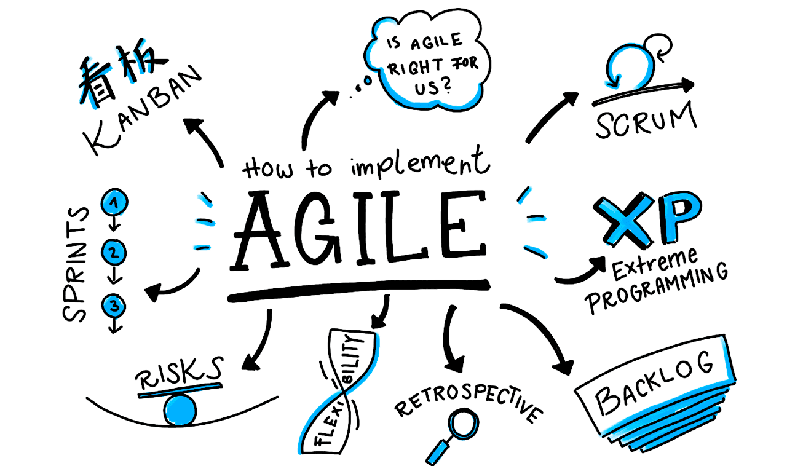
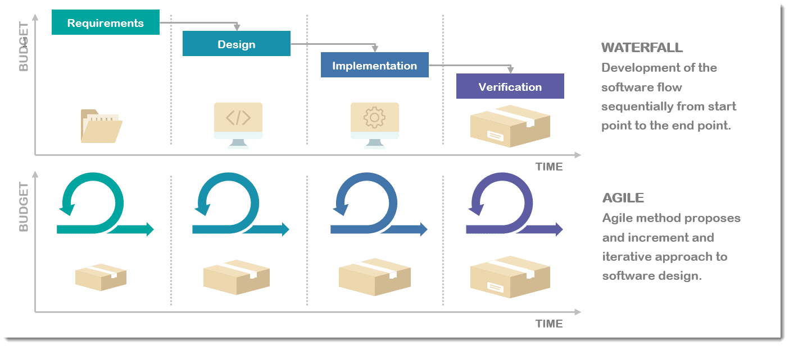
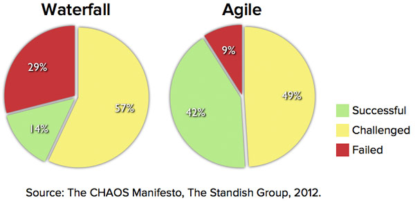
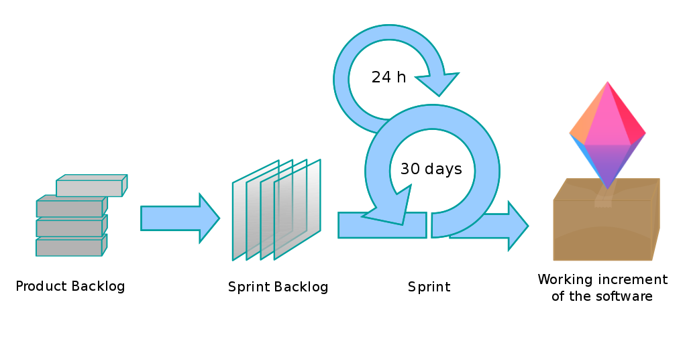
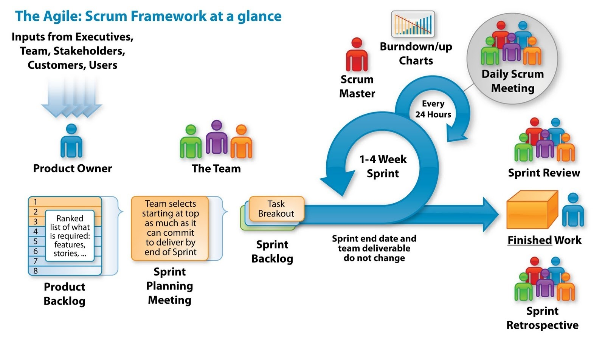
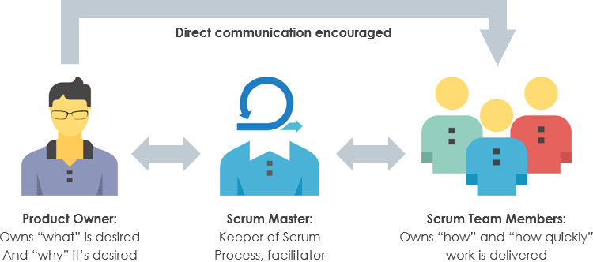
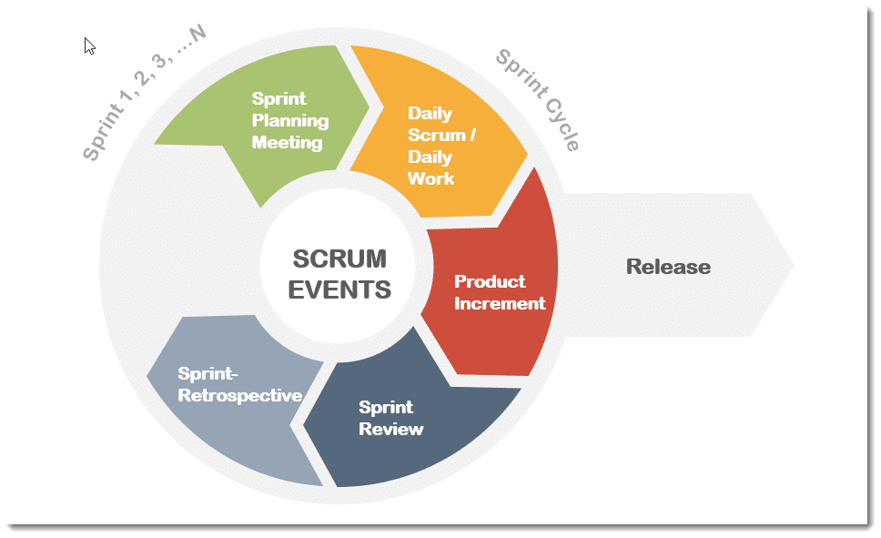
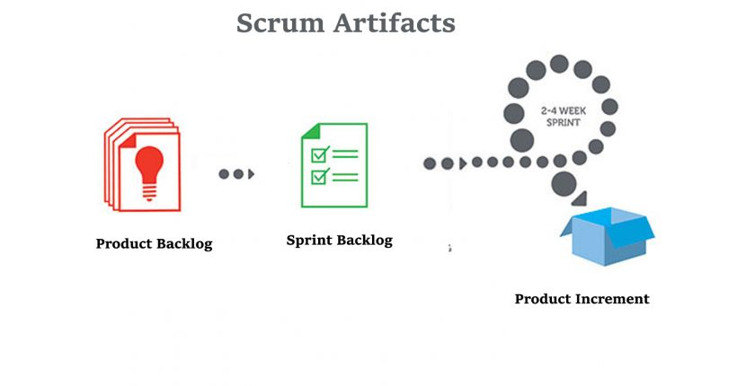

Agile
My name is Yauheni Koniukh
This 10-minute guide will cover following:
- History of Agile Methodologies
- Overview of Agile
- Popular Agile Methodologies
- How Scrum Works
- SCRUM ROLES
- SCRUM Events
- SCRUM Artifacts
The Modern-day agile methodologies were actually discovered in 2001 when a group of 17 software engineers met to discuss an alternative project management approach.
Following that three-day meeting, the group of 17 leaders was ready for the next chapter in the history of Agile: Convincing the world of the value of everything they laid out in the Agile Manifesto.

Overview of agile
94% of organizations are already practicing agile in some form.
By using Agile the projects became more successfully as you can see in the statistic below.
What is Agile project management?
Scrum Overview
Scrum roles
Team
Product Owner

Scrum events
Scrum Artifacts
Conclusion
All in all, the agile methodologies are meant to improve software development process, not to complicate it. Its primary benefits include helping organization release their software faster and better and for a lot less money.